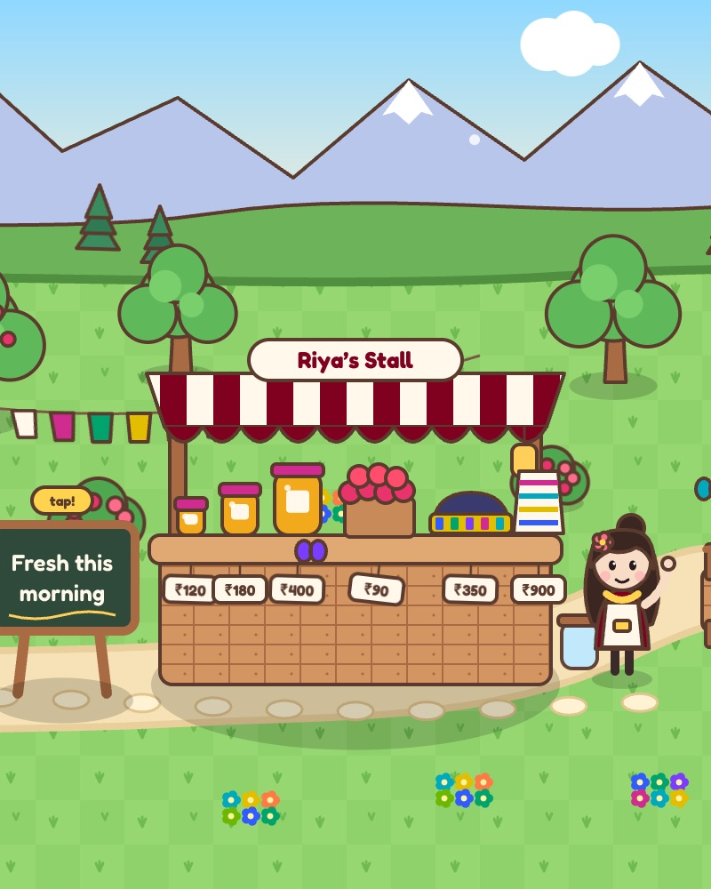

Lab · 2026 · No. 010 · Independent · lab
Market Day
A small game about why people buy. Mind a stall at a hill market, set the prices, choose the sign, and watch the villagers decide. Then come back for Festival day and a Winter market.
- THE CHOICES
- Price tags and a chalkboard sign; a free-taste tray and prices ending in 9 at the festival; a chai and walnut bundle in winter
- THREE DAYS
- A first market day, Festival day and a Winter market, where happy customers come back
- MY PART
- The idea, the villagers, the drawing and the rules
- BUILT WITH
- One HTML file: every villager drawn in SVG, every sound and voice made in the browser

PLAY
Price it, sign it, open up.
Tap Set prices to change the price tags, then tap the chalkboard to choose what it says. Open the stall, and change things once at lunch. At dusk, the ledger shows who bought, why, and how much more they would have paid. Switch days from “Other days” in the morning; win villagers early and they come back loyal.
THE IDEA
Most of marketing is a nudge, not a price cut. Here you can watch twelve of them at work on eleven shoppers, one at a time.
THE LEDGER
Every villager has a limit, and the right nudge stretches it. The ledger shows each reason and each limit, so the next day you can price a little smarter.
THE VILLAGERS
Eleven shoppers, twelve reasons.
WHY IT’S HERE
The rest of this site is work for clients. The Lab is for things I make because I want them to exist. This one turns the ideas I use every day into three days at a hill market, from a sunny morning to a festival to the first snow. A perfect day is possible on each, but it takes the right prices, and the right nudge at the right time.